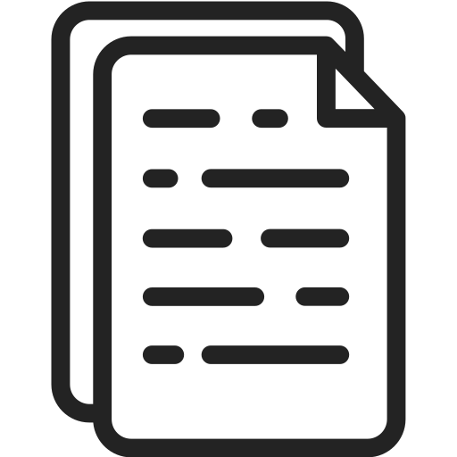
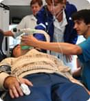

СТАНДАРТЫ ОКАЗАНИЯ СКОРОЙ МЕДИЦИНСКОЙ ПОМОЩИ
ПОМОЩЬ ПРИДЕТ ВСЕГДА!
ГБУЗ НО ССМПНН для населения Нижнего Новгорода круглосуточно оказывает скорую медицинскую помощь (в том числе выезд специализированных бригад: педиатрического, психиатрического, реанимационного профиля).
Единый телефон "горячей линии" для приема устных обращений граждан 428-62-52
В соответствии с Приказом Министерства здравоохранения и социального развития РФ от 20 июня 2013г. № 388н «Об утверждении порядка оказания скорой медицинской помощи»:

- Скорая, в том числе скорая специализированная, медицинская помощь оказывается при заболеваниях, несчастных случаях, травмах, отравлениях и других состояниях, требующих срочного медицинского вмешательства.
- Скорая, в том числе скорая специализированная, медицинская помощь оказывается на основе стандартов медицинской помощи.
- Скорая, в том числе скорая специализированная, медицинская помощь оказывается в следующих условиях:
- Вне медицинской организации - по месту вызова бригады скорой, в том числе скорой специализированной, медицинской помощи, а также в транспортном средстве при медицинской эвакуации;
- Амбулаторно (в условиях, не предусматривающих круглосуточного медицинского наблюдения и лечения);
- Стационарно (в условиях, обеспечивающих круглосуточное медицинское наблюдение и лечение).
- Скорая, в том числе скорая специализированная, медицинская помощь оказывается в следующих формах:
- Экстренной - при внезапных острых заболеваниях, состояниях, обострении хронических заболеваний, представляющих угрозу жизни пациента;
- Неотложной - при внезапных острых заболеваниях, состояниях, обострении хронических заболеваний без явных признаков угрозы жизни пациента.
Полезная информация: